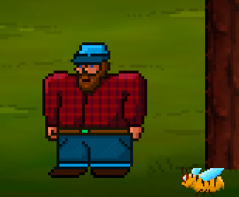
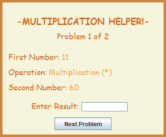
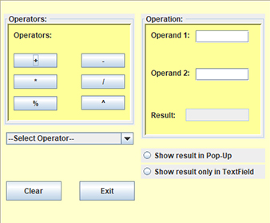

Hangman made in Java
This is a simple Hangman game I created in Java during some free time. I used it as an opportunity to use Java Swing in a project that wasn't being used for school.
This was made with Java using IntelliJ IDE.
Book Game Projects made in C++
These are the projects from a book I followed called: Beginning C++ Game Programming 2nd Edition. They gave away this book for free and I decided I might as well learn C++ from it.
This was made with C++ using CLion IDE.
Arithmetic Helper made in Java
This is an arithmetic helper I created in Java in my first year of college. It takes inputs on basic arithmetic math problems, and can output how long it took you to solve each problem, average solve time, a scoreboard, and other neat features.
This was made with Java using Eclipse IDE.
Calculator made in Java
This is a simple calculator I created in Java in my first year of college. It takes two operands and can perform various functions with them. This was my first real opportunity to work with GUI.
This was made with Java using Eclipse IDE.